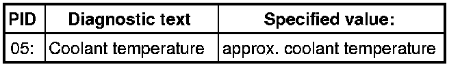
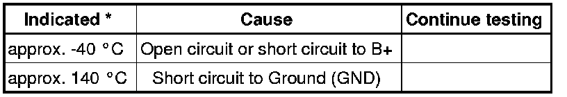
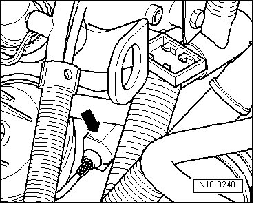
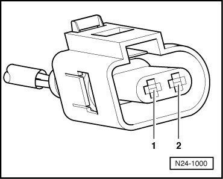

Coolant Temperature Sensor/Switch (For Computer): Testing and Inspection
Diagnostic Procedures
Engine Coolant Temperature Sensor, Checking
• Use only gold-plated terminals when servicing terminals in harness connector of sensor.
Special tools, testers and auxiliary items required
• Multimeter (VAG1526) or Multimeter (VAG1715)
• Connector test kit (VAG1594)
• Wiring diagram
Test requirements
• Fuses in E-box (plenum chamber, left) must be OK:

• Ground (GND) connections between engine and chassis must be OK.
• Parking brake must be engaged or else daylight driving lights will be switched on.
• For vehicles with automatic transmission, selector lever must be in P.
• Engine must be cold.
Function test
- Connect diagnostic tester.
- Switch ignition on.
- Under address word 33, select "Diagnostic mode 1: Checking measured values."
- Select the measuring value "PID 05: Coolant temperature".
- Check specified value of coolant temperature:

If specified value is not obtained:
- Continue test according to the following table:

* If a temperature is indicated which differs greatly from ambient temperature of sensor, check sensor wires for contact resistance.
If specified value is obtained:
- Start engine and let run at idle. The temperature must climb uniformly
• The temperature increases in increments of 1.0° C.
• If the engine shows problems in certain temperature ranges and if the temperature does not climb uniformly, the temperature signal is intermittent and the sensor should be replaced.
- Switch ignition off.
Continuation of test if indication is approx. -40° C:
- Disconnect 2-pin connector from Engine Coolant Temperature (ECT) sensor (G62) (arrow).

- Bridge terminals 1 + 2 of connector using the respective adapter cables and observe the indication on display.

If temperature jumps to approx. 140° C:
- End diagnosis and switch ignition off.
- Replace Engine Coolant Temperature (ECT) Sensor (G62).
CAUTION!
• The cooling system is under pressure.
• Danger of scalding when opening!
- Erase DTC memory of Engine Control Module (ECM) , Diagnostic mode 4: Reset/erase diagnostic data.
- Generate readiness code.
If indication remains at approx. -40° C:
- End diagnosis and switch ignition off.
- Check wires according to wiring diagram.
Continuation of test if indication is approx. 140° C:
- Disconnect 2-pin connector from Engine Coolant Temperature (ECT) sensor (G62) (arrow).
If indication jumps to approx. -40° C:
- End diagnosis and switch ignition off.
- Replace Engine Coolant Temperature (ECT) Sensor (G62).
CAUTION!
• The cooling system is under pressure.
• Danger of scalding when opening!
- Erase DTC memory of Engine Control Module (ECM) , Diagnostic mode 4: Reset/erase diagnostic data.
- Generate readiness code.
If temperature remains at approx. 140° C:
- End diagnosis and switch ignition off.
- Check wires according to wiring diagram.
Checking wiring
- Connect test box to control module wiring harness , connect test box for wiring test.
- Check wires between test box and 2-pin connector for open circuit according to wiring diagram.
Terminal 1 + socket 93
Terminal 2 + socket 108
Wire resistance: max. 1.5 ohms
- Check wires for short circuit to each other, to vehicle Ground (GND) and to B+.
Specified value: infinite ohms
- Erase DTC memory of Engine Control Module (ECM) , Diagnostic mode 4: Reset/erase diagnostic data.
- Generate readiness code.
If no malfunctions are found in wires:
- Replace Engine Coolant Temperature (ECT) Sensor (G62).
CAUTION!
• The cooling system is under pressure.
• Danger of scalding when opening!
- Erase DTC memory of Engine Control Module (ECM) , Diagnostic mode 4: Reset/erase diagnostic data.
- Generate readiness code.
If no malfunctions are detected in the wires and the resistance values are OK:
- Replace Motronic Engine Control Module (ECM) (J220).
Final Procedures
After the repair work, the following work steps must be performed in the following sequence:
1. Check the DTC memory. Refer to --> [ Diagnostic Mode 03 - Read DTC Memory ] Diagnostic Modes 01 - 09.
2. If necessary, erase the DTC memory. Refer to --> [ Diagnostic Mode 04 - Erase DTC Memory ] Diagnostic Modes 01 - 09.
3. If the DTC memory was erased, generate readiness code. Refer to --> [ Readiness Code ] Monitors, Trips, Drive Cycles and Readiness Codes.